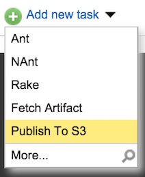
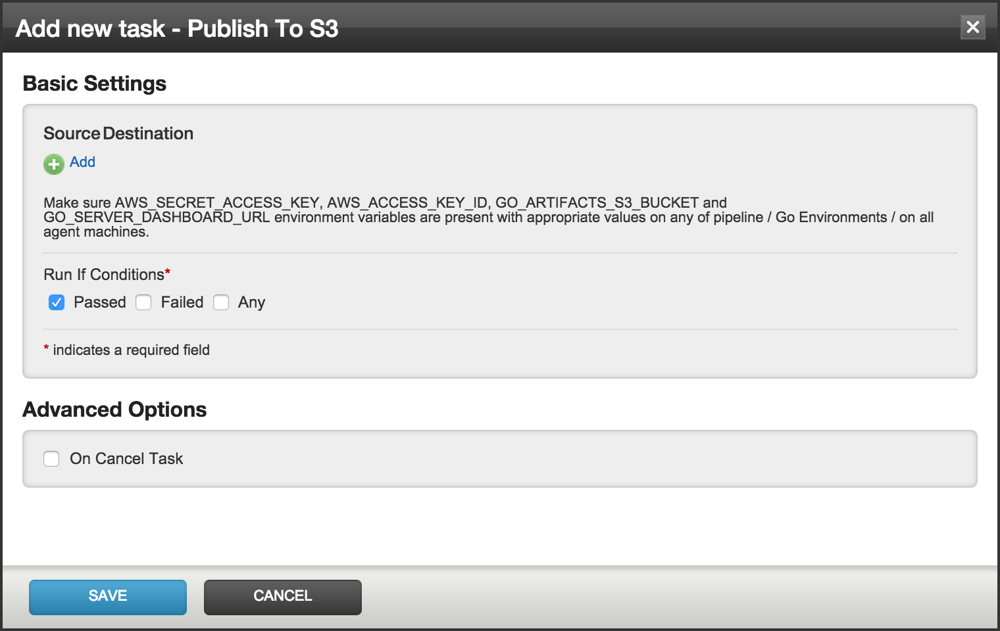
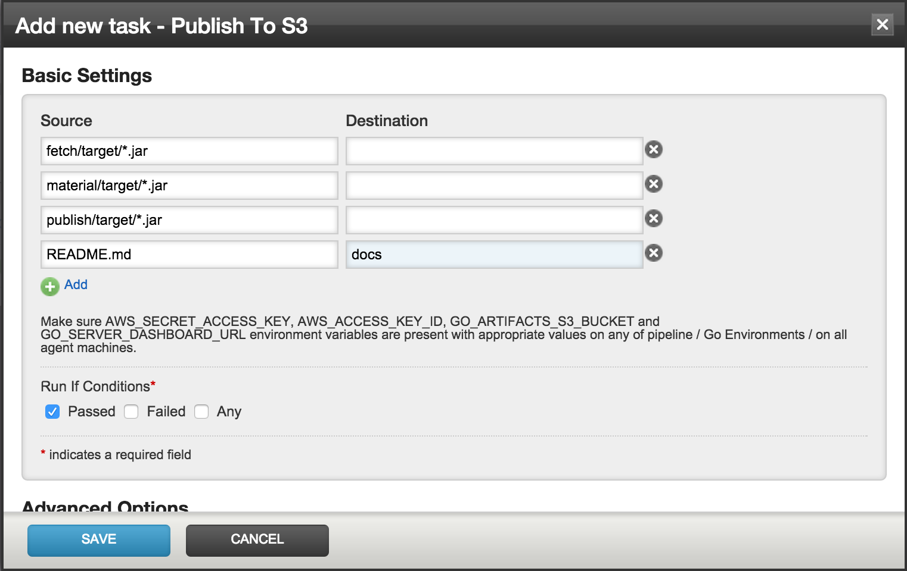

Publish
The Publish to S3 task plugin (indix.s3publish) is used to upload artifacts to S3.
Once the plugin is installed, it should be available as a task, ready to be added into any of your jobs. From the admin section of the concerned job, click on the Add new task link and choose Publish To S3 as the task, as shown in the following screenshot:

The resulting dialog for the task is shown in the following screenshot:

The interface is pretty similar to the Artifacts configuration in Go. Clicking on the Add link adds text boxes where source and destination paths for artifacts can be provided. This is shown in the following example screenshot:

The artifacts get uploaded to the S3 path s3://<GO_ARTIFACTS_S3_BUCKET>/<PIPELINE_NAME>/<STAGE_NAME>/<JOB_NAME>/<PIPELINE_COUNTER>.<STAGE_COUNTER> as the root path.
For example, if the pipeline name is TestPublish, and the stage and job names are defaultStage and defaultJob respectively, the root path for the artifacts for the eight run of the pipeline and the first run of defaultStage will be s3://gocd/TestPublish/defaultStage/defaultJob/8.1/. gocd here is the name of the bucket for storing artifacts.
As per the screenshot, the jar files in fetch/target, material/target and publish/target will be uploaded to the root of the artifacts. The README.md file will be uploaded unders the docs folder.
After adding the necessary artifacts, click on Save to add the task to the job.